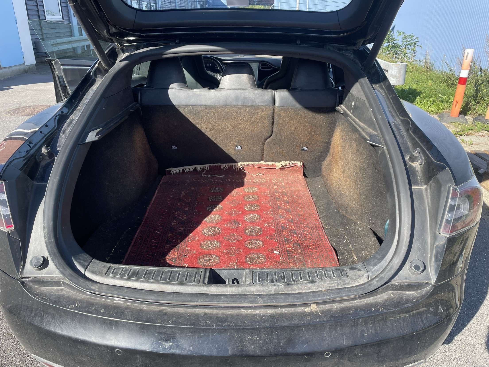
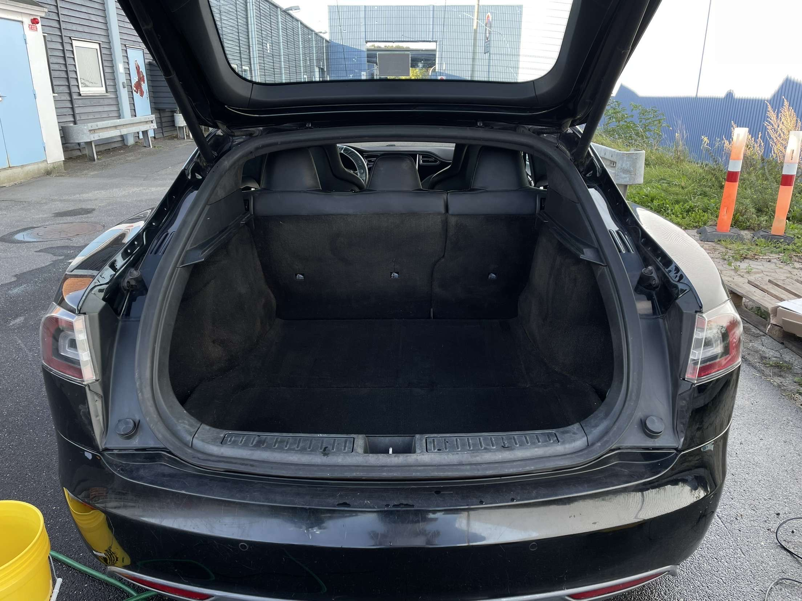
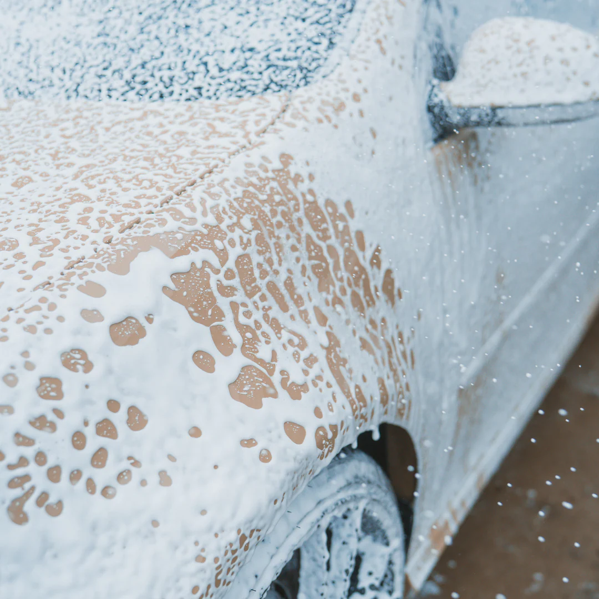
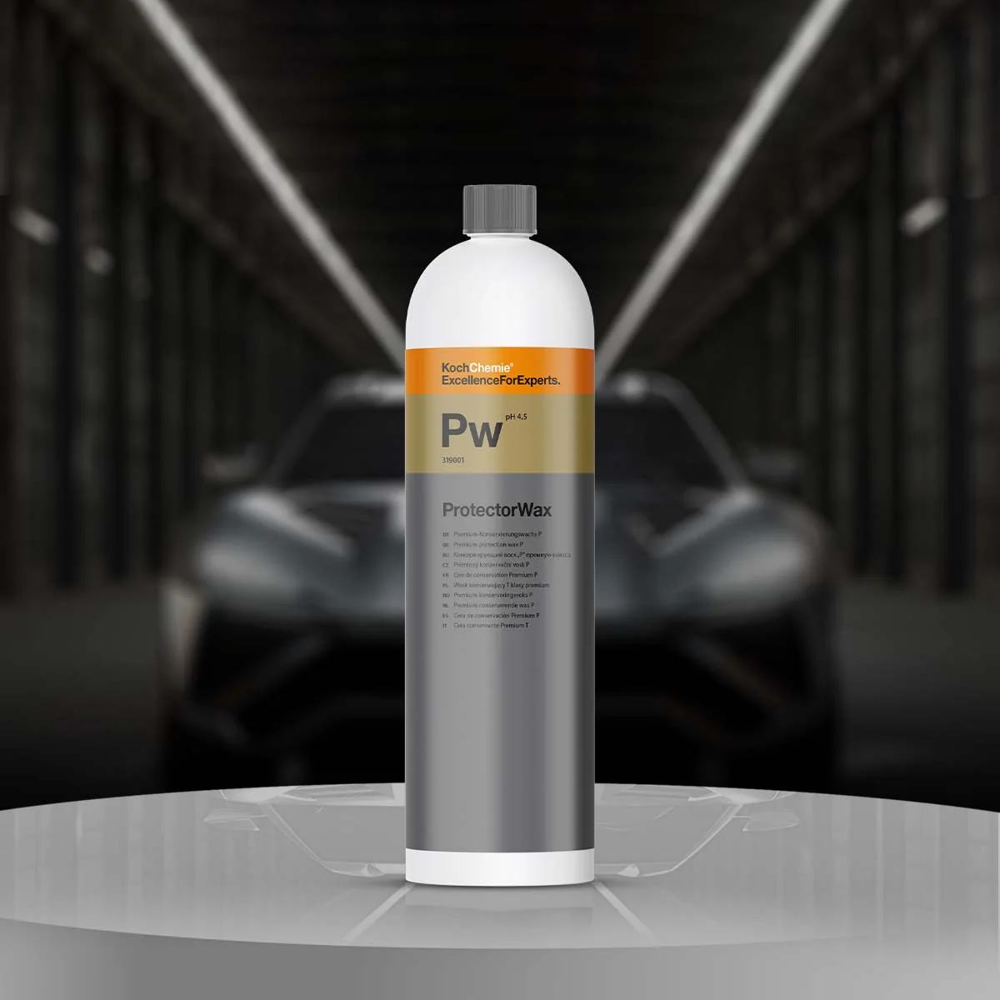
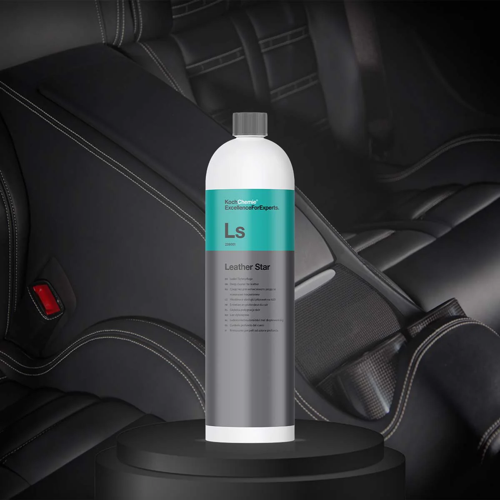
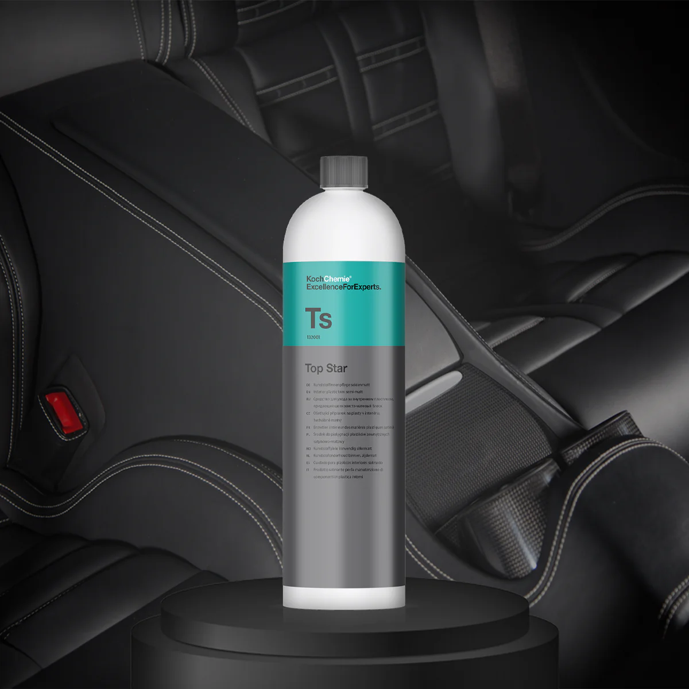
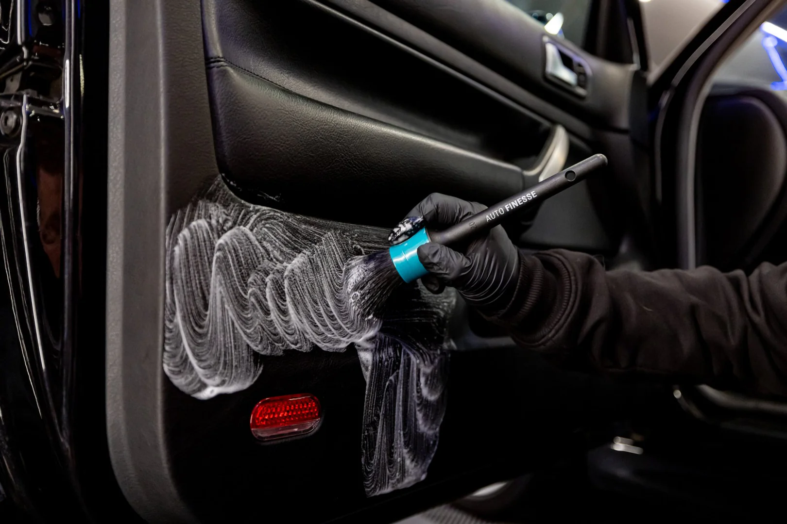

Hvilke tilkøb tilbyder vi?
Sæderens
Der gemmer sig enormt meget skidt og møg i dine bilsæder. Hvornår har du sidst fået dem gjort rent?
Vores sæderens er en dybdegående behandling, der fjerner snavs, pletter og lugt fra bilens sæder. Vi bruger specialiserede rengøringsmidler og teknikker for at sikre, at dine sæder bliver rene og friske igen.
Vores sæderens tilkøbes for 149,- ekstra.
Fjernelse af hundehår
Hunde hår sætter sig fast i bilens stof, sæder og tæpper, og kan være meget svært at få ud.
Vi fjerner hundehåret så din bil bliver ren og frisk igen.
Vores fjern af hundehår tilkøbes for 99,- ekstra.


Voksbehandling
Voksbehandlingen hjælper med at beskytte bilens lak og give den en skinnende glans.
Vores voksbehandling tilkøbes for 149,- ekstra.


Læderbehandling
Læderbehandlingen hjælper med at beskytte bilens læder og give den en skinnende glans.
Vores læderbehandling tilkøbes for 99,- ekstra.


Plastikpleje
Plastikplejen hjælper med at genskabe originaludseendet på din bil og give den et opfriskende look.
Vores plastikpleje tilkøbes for 99,- ekstra.

